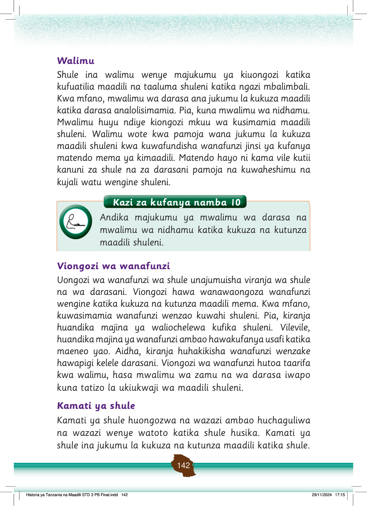

Walimu
Shule ina walimu wenye majukumu ya kiuongozi katika kufuatilia maadili na taaluma shuleni katika ngazi mbalimbali.
Kwa mfano, mwalimu wa darasa ana jukumu la kukuza maadili katika darasa analolisimamia.
Pia, kuna mwalimu wa nidhamu.
Mwalimu huyu ndiye kiongozi mkuu wa kusimamia maadili shuleni.
Walimu wote kwa pamoja wana jukumu la kukuza maadili shuleni kwa kuwafundisha wanafunzi jinsi ya kufanya matendo mema ya kimaadili.
Matendo hayo ni kama vile kutii kanuni za shule na za darasani pamoja na kuwaheshimu na kujali watu wengine shuleni.
Viongozi wa wanafunzi
Uongozi wa wanafunzi wa shule unajumuisha viranja wa shule na wa darasani.
Viongozi hawa wanawaongoza wanafunzi wengine katika kukuza na kutunza maadili mema.
Kwa mfano, kuwasimamia wanafunzi wenzao kuwahi shuleni.
Pia, kiranja huandika majina ya waliochelewa kufika shuleni.
Vilevile, huandika majina ya wanafunzi ambao hawakufanya usafi katika maeneo yao.
Aidha, kiranja huhakikisha wanafunzi wenzake hawapigi kelele darasani.
Viongozi wa wanafunzi hutoa taarifa kwa walimu, hasa mwalimu wa zamu na wa darasa iwapo kuna tatizo la ukiukwaji wa maadili shuleni.
Kamati ya shule
Kamati ya shule huongozwa na wazazi ambao huchaguliwa na wazazi wenye watoto katika shule husika.
Kamati ya shule ina jukumu la kukuza na kutunza maadili katika shule.
Historia ya Tanzania na Maadili STD 3 PB Final.indd 142
29/11/2024 17:15
Kazi za kufanya namba 10